Page 4 out of 12 total pages
The kernel defines a small set of Java classes that implement a data structure supporting a general form of uninterpreted clustered graphs, plus methods for accessing and manipulating such graphs. These graphs provide an abstract syntax for netlists, state transition diagrams, block diagrams, etc. An abstract syntax is a conceptual data organization. It can be contrasted with a concrete syntax, which is a syntax for a persistent, readable representation of the data, such as EDIF for netlists. A particular graph configuration is called a topology.
Although this idea of an uninterpreted abstract syntax is present in the original Ptolemy kernel [7], in fact the original Ptolemy kernel has more semantics than we would like. It is heavily biased towards dataflow, the model of computation used most heavily. Much of the effort involved in implementing models of computation that are very different from dataflow stems from having to work around certain assumptions in the kernel that, in retrospect, proved to be particular to dataflow.
A topology is a collection of entities and relations. We use the graphical notation shown in figure
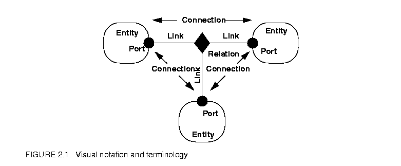
2.1, where entities are depicted as rounded boxes and relations as diamonds. Entities have ports, shown as filled circles, and relations connect the ports. We consistently use the term connection to denote the association between connected ports (or their entities), and the term link to denote the association between ports and relations. Thus, a connection consists of a relation and two or more links.The use of ports and hierarchy distinguishes our topologies from mathematical graphs. In a mathematical graph, an entity would be a vertex, and an arc would be a connection between entities. A vertex could be represented in our schema using entities that always contain exactly one port. In a directed graph, the connections are divided into two subsets, one consisting of incoming arcs, and the other of outgoing arcs. The vertices in such a graph could be represented by entities that contain two ports, one for incoming arcs and one for outgoing arcs. Thus, in mathematical graphs, entities always have one or two ports, depending on whether the graph is directed. Our schema generalizes this by permitting an entity to have any number of ports, thus dividing its connections into an arbitrary number of subsets.
A second difference between our graphs and mathematical graphs is that our relations are multi-way associations, whereas an arc in a graph is a two-way association. A third difference is that mathematical graphs normally have no notion of hierarchy (clustering).
Relations are intended to serve a mediators, in the sense of the Mediator design pattern of Gamma, et al. [13]. "Mediator promotes loose coupling by keeping objects from referring to each other explicitly..." For example, a relation could be used to direct messages passed between entities. Or it could denote a transition between states in a finite state machine, where the states are represented as entities. Or it could mediate rendezvous between processes represented as entities. Or it could mediate method calls between loosely associated objects, as for example in remote method invocation over a network.
The most basic classes in the Ptolemy II kernel package and their relationships are shown in figure
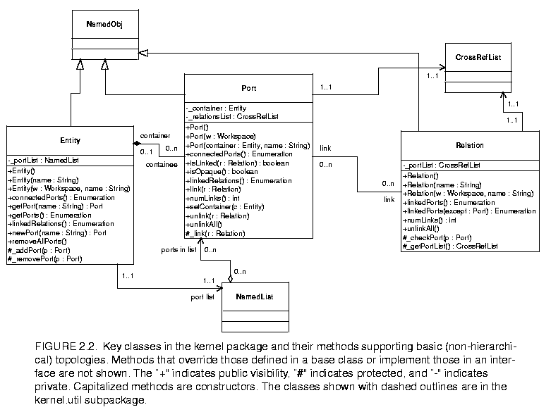
2.2, using UML notation [12][33]. Such relationships are called an object model, and represent many essential features about the design. We show only the static structure diagrams, or class diagrams of UML.The class name is shown at the top of each box, its attributes are shown below that, and its methods below that. The attributes are usually not directly visible to a programmer using these classes (they are implemented as private members). But they are a useful part of the object model because they indicate the state information contained by an instance of the class.
Subclasses are indicated by lines with white triangles (or outlined arrow heads). The class on the side of the arrow head is the superclass or base class. The class on the other end is the subclass or derived class. The derived class is said to specialize the base class, or conversely, the base class to generalize the derived class. The derived class inherits all the methods shown in the base class, and may override or some of them. In our object models, we do not explicitly show methods that override those defined in a base class or inherited from a base class. For example, in figure 2.3, Attribute has all the methods of NamedObj, but only shows the one method it adds. Thus, the complete set of methods of a class is cumulative. Every class has its own methods plus those of all its superclasses.
Our object models do not show private methods, which are not inherited. For completeness, our object models do show all public and protected methods of these classes, although a proper object model might only show those relevant to the issues being discussed. We also show the constructors, which always have the same name as the class and no return type.
Attributes with leading underscores, such as _portList, are private or protected members or methods. In the UML diagrams, private members are indicated with a leading "-". Public methods have a leading "+" and protected methods a leading "#".
Classes shown in boxes outlined with dashed lines, such as NamedObj, CrossRefList, and NamedList in figure 2.2, are fully described elsewhere. This is not standard UML notation, but it gives us a convenient way to partition diagrams. Often, these classes belong to another package. In the case of figure 2.2, those classes are shown fully in figure 2.3
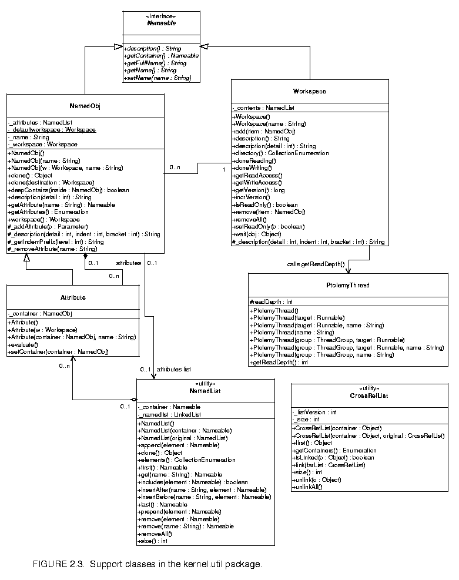
.Figure 2.3 also shows an example of an interface, Nameable, which is indicated by the label "<<Interface>>" and by italics in the name. An interface defines a set of methods without providing an implementation for them. When a class implements an interface, the object model shows the relationship with a dotted-line with an arrow. Any concrete class (one that can be instantiated) that implements an interface must provide implementations of all its methods. In our object models, we do not show those methods explicitly in the concrete class, just like inherited methods, but their presence is implicit in the relationship.
We will occasionally show abstract classes, which are like interfaces in that they cannot be instantiated, but unlike interfaces in that they may provide default implementations for some methods, and may even have private members. Abstract classes are indicated by italics in the class name.
Inheritance and implementation are types of associations between entities in the object model. Associations of other types are indicated by other lines, often annotated with ranges like "0..n" or with diamonds on one end or the other.
Aggregations are shown as associations with diamonds. For example, an Entity is an aggregation of any number (0..n) instances of Port. More strongly, we say that a Port is contained by 0 or 1 instances of Entity, or that Entity is a composition of Ports.
This containment is mediated by the NamedList utility class, shown in figure 2.3. Unlike the containment association, however, the Port has no reference to a NamedList that refers to it, and any number of NamedList instances can refer to it. Only one Entity can contain it. The stronger form of aggregation (containment or composition) is indicated by the filled diamond, while the weaker form is indicated by the unfilled diamond.
As usual in UML, return types of methods are shown after a colon. Types of arguments are also shown after a colon, but within the parentheses that delimit the argument list.
We have made an effort to be consistent about naming of classes, methods and members. Class names are capitalized, with internal word boundaries also capitalized (as in "NamedObj"). Method names that are plural, such as getPorts(), usually return an enumeration (or sometimes an array). As explained before, private and protected members and methods have a leading underscore. Members and methods are not capitalized, although internal word boundaries usually are. Considerable discussion was involved in the choice of most class and method names, although inevitably, we had to make some compromises.
The classes shown in figure 2.2 support non-hierarchical topologies, like that shown in figure 2.1.
An Entity contains any number of Ports; such an aggregation is indicated by the association with an unfilled diamond and the label "0..n" to show that the Entity can contain any number of Ports, and the label "0..1" to show that the Port is contained by at most one Entity. This association is uses the NamedList class shown at the bottom of figure 2.2 and defined fully in figure 2.3. There is exactly one instance of NamedList associated with Entity, and it aggregates the ports.
A Port is associated with any number of Relations (the association is called a link), and a Relation is associated with any number of Ports. Link associations use CrossRefList, shown in figure 2.3. There is exactly one instance of CrossRefList associated with each port and each relation. The links define a web of interconnected entities.
A major concern in the choice of methods to provide and in their design is maintaining consistency. By consistency we mean that the following key properties are satisfied:
In particular, the design of these classes ensures that the _container attribute of a port refers to an entity that includes the port on its _portList. This is done by limiting the access to both attributes. The only way to specify that a port is contained by an entity is to call the setContainer() method of the port. That method guarantees consistency by first removing the port from any previous container's portList, then adding it to the new container's port list. A port is removed from an entity by calling setContainer() with a null argument.
A change in a containment association involves several distinct objects, and therefore must be atomic, in the sense that other threads must not be allowed to intervene and modify or access relevant attributes halfway through the process. This is ensured by synchronization on the workspace, as explained below in section 2.8. Moreover, if an exception is thrown at any point during the process of changing a containment association, any changes that have been made must be undone so that a consistent state is restored.
The kernel package has a subpackage called kernel.util that provides some underlying support classes, some of which are shown in figure 2.3. These classes define notions basic to Ptolemy II of containment, naming, and parameterization, and provide generic support for relevant data structures.
Although these classes do not provide support for constructing clustered graphs, they provide rudimentary support for container associations. An instance of these classes can have at most one container. That container is viewed as the owner of the object, and "managed ownership" [21] is used as a central tool in thread safety, as explained in section 2.8 below.
In the base classes shown in figure 2.2, only an instance of Port can have a non-null container. It is the only class with a setContainer() method. Instances of all other classes have no container, and their getContainer() method will return null. In the classes of figure 2.3, only Attribute has a setContainer() method.
Every object is associated with exactly one instance of Workspace, as shown in figure 2.3, but the workspace is not viewed as a container. The workspace is defined when an object is constructed, and no methods are provided to change it. It is said to be immutable, a critical property in its use for thread safety.
The Nameable interface supports hierarchy in the naming so that individual named objects in a hierarchy can be uniquely identified. By convention, the full name of an object is a concatenation of the full name of its container, if there is one, or the name of the workspace, if there is not, a period ("."), and the name of the object. The full name is used extensively for error reporting.
NamedObj is a concrete class implementing the Nameable interface. It also serves as an aggregation of attributes, as explained below in section 2.5.4.
Names of objects are only required to be unique within a container. Thus, even the full name is not assured of being globally unique.
Here, names are a property of the instances themselves, rather than properties of an association between entities. As argued by Rumbaugh in [38], this is not always the right choice. Often, a name is more properly viewed as a property of an association. For example, a file name is a property of the association between a directory and a file. A file may have multiple names (through the use of symbolic links). Our design takes a stronger position on names, and views them as properties of the object, much as we view the name of a person as a property of the person (vs. their employee number, for example, which is a property of their association with an employer).
Workspace is a concrete class that implements the Nameable interface, as shown in figure 2.3. All objects in a topology are associated with a workspace, and almost all operations that involve multiple objects are only supported for objects in the same workspace. This constraint is exploited to ensure thread safety, as explained in section 2.8 below. The name of the workspace is always the first term in the full name. If the workspace has no name (a common situation), then the full name simply has a leading period.
In almost all applications of Ptolemy II, entities, ports, and relations need to be parameterized. The base classes shown in figure 2.3 provide for these objects to have any number of instances of the Attribute class attached to them. Attribute is a NamedObj that can be contained by another NamedObj, and serves as a base class for parameters.
Attributes are added to a NamedObj by calling their setContainer() method and passing it a reference to the container. They are removed by calling setContainer() with a null argument. The NamedObj class provides the getAttribute() method, which takes an attribute name as an argument and returns the attribute, and the getAttributes() method, which returns an enumeration of all the attributes in the object.
By itself, an instance of the Attribute class carries only a name, which may not be sufficient to parameterize objects. A derived class called Parameter is defined in the data package.
Figure 2.3 shows two list classes that are used extensively in Ptolemy II. NamedList implements an ordered list of objects with the Nameable interface. It is unlike a hash table in that it maintains an ordering of the entries that is independent of their names. It is unlike a vector or a linked list in that it supports accesses by name. It is used in figure 2.3 to maintain a list of attributes, and in figure 2.2 to maintain the list of ports contained by an entity.
The class CrossRefList is a bit more interesting. It mediates bidirectional links between objects that contain CrossRefLists, in this case, ports and relations. It provides a simple and efficient mechanism for constructing a web of objects, where each object maintains a list of the objects it is linked to. That list is an instance of CrossRefList. The class ensures consistency. That is, if one object in the web is linked to another, then the other is linked back to the one. CrossRefList also handles efficient modification of the cross references. In particular, if a link is removed from the list maintained by one object, the back reference in the remote object also has to be deleted. This is done in O(1) time. A more brute force solution would require searching the remote list for the back reference, increasing the time required and making it proportional to the number of links maintained by each object.
The classes shown in figure 2.2 provide only partial support for hierarchy, through the concept of a container. Subclasses, shown in figure
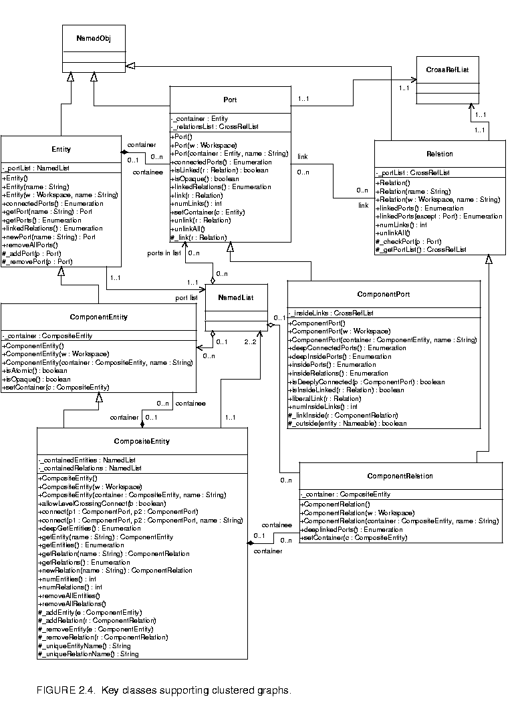
2.4, extend these with more complete support for hierarchy. ComponentEntity, ComponentPort, and ComponentRelation are used whenever a clustered graph is used. All ports of a ComponentEntity are required to be instances of ComponentPort. CompositeEntity extends ComponentEntity with the capability of containing ComponentEntity and ComponentRelation objects. Thus, it contains a subgraph. The association between ComponentEntity and CompositeEntity is the classic Composite design pattern [13].Composite entities are non-atomic (isAtomic() return false). They can contain a graph (entities and relations). By default, a CompositeEntity is transparent (isOpaque() returns false). Conceptually, this means that its contents are visible from the outside. The hierarchy can be ignored (flattened) by algorithms operating on the topology. Some subclasses of CompositeEntity are opaque (see the Actor chapter for examples). This forces algorithms to respect the hierarchy, effectively hiding the contents of a composite and making it appear indistinguishable from atomic entities.
A ComponentPort contained by a CompositeEntity has inside as well as outside links. It maintains two lists of links, those to relations inside and those to relations outside. Such a port serves to expose ports in the contained entities as ports of the composite. This is the converse of the "hiding" operator often found in process algebras [27]. Ports within an entity are hidden by default, and must be explicitly exposed to be visible (linkable) from outside the entity1. The composite entity with ports thus provides an abstraction of the contents of the composite.
A port of a composite entity may be opaque or transparent. It is defined to be opaque if its container is opaque. Conceptually, if it is opaque, then its inside links are not visible from the outside, and the outside links are not visible from the inside. If it is opaque, it appears from the outside to be indistinguishable from a port of an atomic entity.
The transparent port mechanism is illustrated by the example in figure
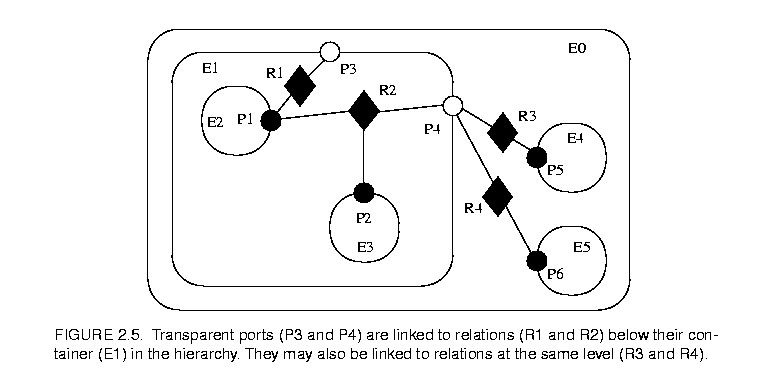
2.52. Some of the ports in figure 2.5 are filled in white rather than black. These ports are said to be transparent. Transparent ports (P3 and P4) are linked to relations (R1 and R2) below their container (E1) in the hierarchy. They may also be linked to relations at the same level (R3 and R4).ComponentPort, ComponentRelation, and CompositeEntity have a set of methods with the prefix "deep," as shown in figure 2.4. These methods flatten the hierarchy by traversing it. Thus, for example, the ports that are "deeply" connected to port P1 in figure 2.5 are P2, P5, and P6. No transparent port is included, so note that P3 is not included.
Deep traversals of a graph follow a simple rule. If a transparent port is encountered from inside, then the traversal continues with its outside links. If it is encountered from outside, then the traversal continues with its inside links. Thus, for example, the ports deeply connected to P5 are P1 and P2. Note that P6 is not included. Similarly, the deepGetEntities() method of CompositeEntity looks inside transparent entities, but not inside opaque entities.
Since deep traversals are more expensive than just checking adjacent objects, both ComponentPort and ComponentRelation cache them. To determine the validity of the cached list, the version of the workspace is used. As shown in figure 2.2, the Workspace class includes a getVersion() and incrVersion() method. All methods of objects within a workspace that modify the topology in any way are expected to increment the version count of the workspace. That way, when a deep access is performed by a ComponentPort, it can locally store the resulting list and the current version of the workspace. The next time the deep access is requested, it checks the version of the workspace. If it is still the same, then it returns the locally cached list. Otherwise, it reconstructs it.
For ComponentPort to support both inside links and outside links, it has to override the link() and unlink() methods. Given a relation as an argument, these methods can determine whether a link is an inside link or an outside link by checking the container of the relation. If that container is also the container of the port, then the link is an inside link.
For a few applications, such as Statecharts [15], level-crossing links and connections are needed. The example shown in figure
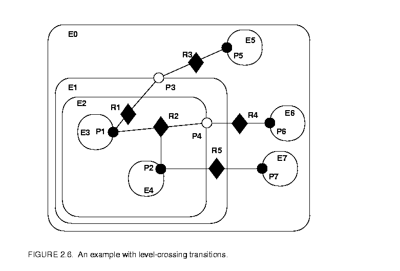
2.6 has three level-crossing connections that are slightly different from one another. The links in these connections are created using the liberalLink() method of ComponentPort. The link() method prohibits such links, throwing an exception if they are attempted (most applications will prohibit level-crossing connections by using only the link() method).An alternative that may be more convenient for a user interface is to use the connect() methods of CompositeEntity rather than the link() or liberalLink() method of ComponentPort. To allow level-crossing links using connect(), first call allowLevelCrossingConnect() with a true argument.
The simplest level-crossing connection in figure 2.6 is at the bottom, connecting P2 to P7 via the relation R5. The relation is contained by E1, but the connection would be essentially identical if it were contained by any other entity. Thus, the notion of composite entities containing relations is somewhat weaker when level-crossing connections are allowed.
The other two level-crossing connections in figure 2.6 are mediated by transparent ports. This sort of hybrid could come about in heterogeneous representations, where level-crossing connections are permitted in some parts but not in others. It is important, therefore, for the classes to support such hybrids.
To support such hybrids, we have to modify slightly the algorithm by which a port recognizes an inside link. Given a relation and a port, the link is an inside link if the relation is contained by an entity that is either the same as or is deeply contained (i.e. directly or indirectly contained) by the entity that contains the port. The deepContains() method of NamedObj supports this test.
The transparent port mechanism we have described supports connections like that between P1 and P5 in figure
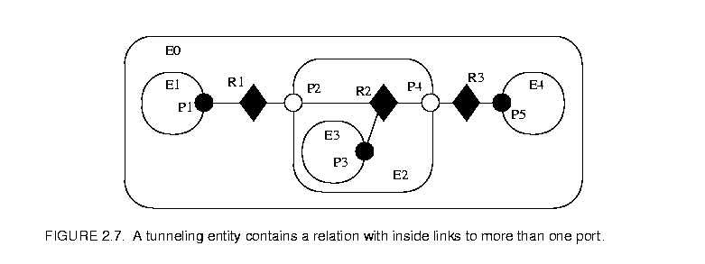
2.7. That connection passes through the entity E2. The relation R2 is linked to the inside of each of P2 and P4, in addition to its link to the outside of P3. Thus, the ports deeply connected to P1 are P3 and P5, and those deeply connected to P3 are P1 and P5, and those deeply connected to P5 are P1 and P3.A tunneling entity is one that contains a relation with links to the inside of more than one port. It may of course also contain more standard links, but the term "tunneling" suggests that at least some deep graph traversals will see right through it.
Support for tunneling entities is a major increment in capability over the previous Ptolemy kernel [7] (Ptolemy 0.x). That infrastructure required an entity (which was called a star) to intervene in any connection through a composite entity (which was called a galaxy). Two significant limitations resulted. The first was that compositionality was compromised. A connection could not be subsumed into a composite entity without fundamentally changing the structure of the application (by introducing a new intervening entity). The second was that implementation of higher-order functions that mutated the graph [22] was made much more complicated. These higher-order functions had to be careful to avoid mutations that created tunneling.
The intent of Ptolemy II is that most applications will use graphical rather than textual syntaxes to visualize topologies. However, this is not always possible, and in any case, a graphical description may depict only the starting point of a topology that mutates. It can get difficult to understand an intricate topology.
The description() method in the Nameable interface (figure 2.3) provides a way to obtain detailed information about a topology in a human and machine readable format. This method is implemented by the NamedObj class, which also provides an alternative method that takes a detail argument. This argument can be used to control how much information is obtained.
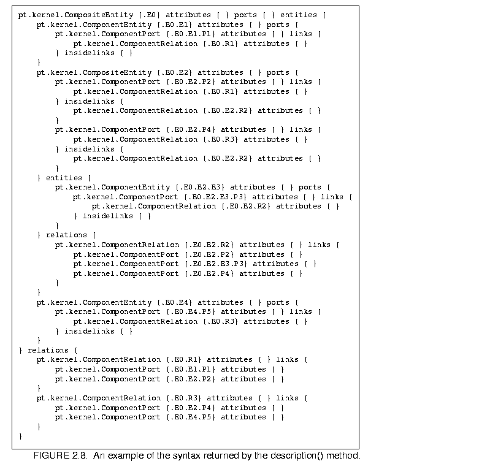
2.8, which describes the topology in figure 2.7. The general syntax for describing an object is "classname {fullname} keyword {value} keyword {value}". The value is often itself a description in exactly this form, or a list of descriptions in this form. For example, in figure 2.8, the keyword "attributes" is always followed by an empty value because no attributes have been set. The keyword "ports" precedes a list of contained ports, each a description. The keyword "entities" precedes a list of contained entities. The rest of the description should be evident.The kernel classes are all capable of being cloned, with some restrictions. Cloning means that an identical but entirely independent object is created. Thus, if the object being cloned contains other objects, then those objects are also cloned. If those objects are linked, then the links are replicated in the new objects. The clone() method in NamedObj provides the interface for doing this. Each subclass provides an implementation.
There is a key restriction to cloning. Because they break modularity, level-crossing links prevent cloning. With level-crossing links, a link does not clearly belong to any particular entity. An attempt to clone a composite that contains level-crossing links will trigger an exception.
An elaborate example of a clustered graph is shown in figure
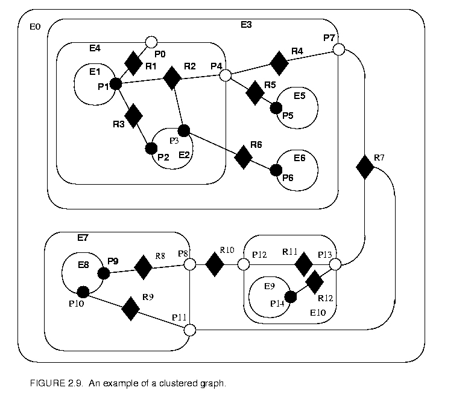
2.9. This example includes instances of all the capabilities we have discussed. The top-level entity is named "E0." All other entities in this example have containers. A Java class that implements this example is shown in figure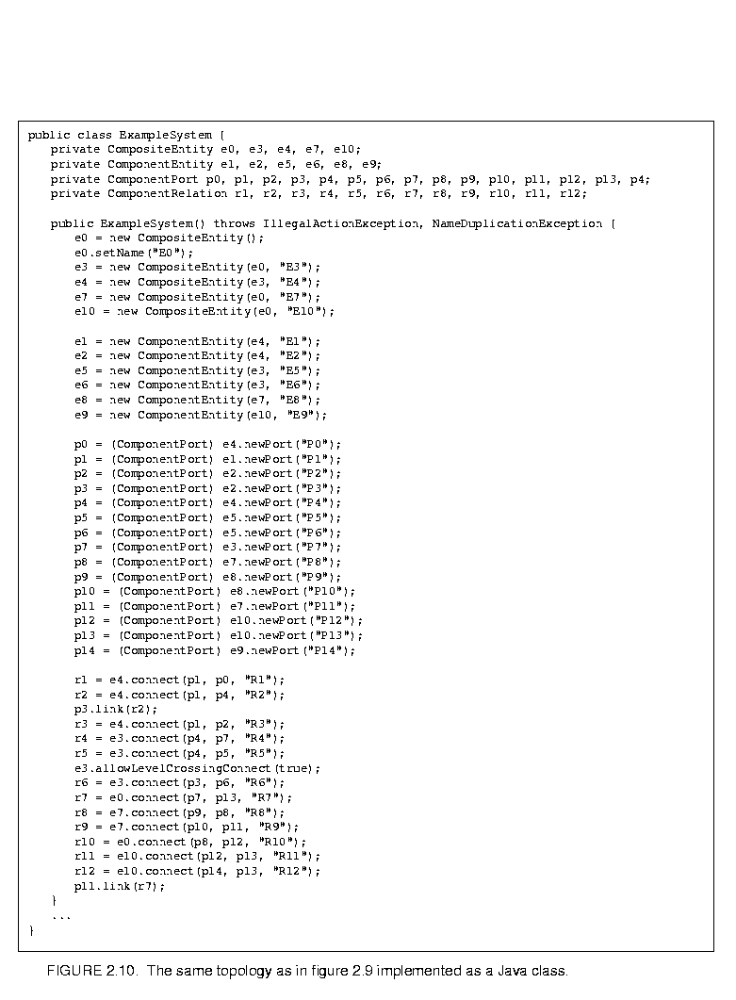
2.10. A script in the Tcl language [30] that constructs the same graph is shown in figure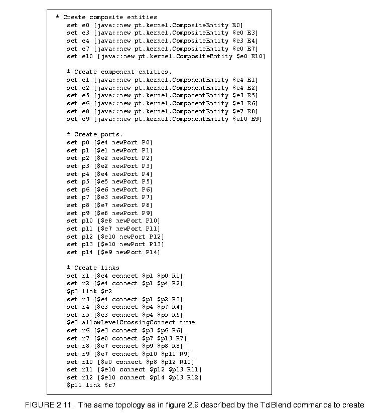
2.11. This script uses TclBlend, an interface between Tcl and Java that is distributed by Sun Microsystems.The order in which links are constructed matters, in the sense that methods that return lists of objects preserve this order. The order implemented in both figures 2.10 and 2.11 is top-to-bottom and left-to-right in figure 2.9. A graphical syntax, however, does not generally have a particularly convenient way to completely control this order.
The results of various method accesses on the graph are shown in figure
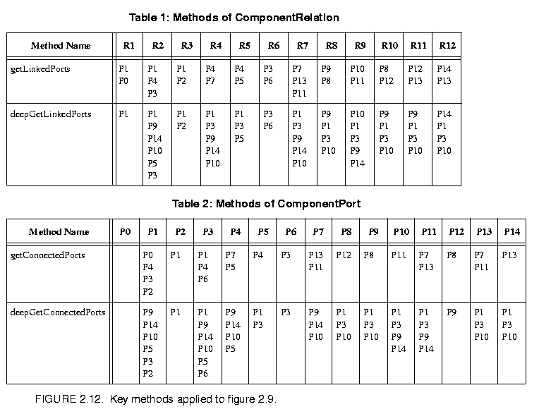
2.12. This table can be studied to better understand the precise meaning of each of the methods.One of the major tenets of the Ptolemy project is that of modeling heterogeneous systems through the use of hierarchical heterogeneity. Information-hiding is a central part of this. In particular, transparent ports and entities compromise information hiding by exposing the internal topology of an entity. In some circumstances, this is inappropriate, for example when the entity internally operates under a different model of computation from its environment. The entity should be opaque in this case.
An entity can be opaque and composite at the same time. Ports are defined to be opaque if the entity containing them is opaque (isOpaque() returns true), so deep traversals of the topology do not cross these ports, even though the ports support inside and outside links. The actor package makes extensive use of such entities to support mixed modeling. That use is described in the Actors chapter. In the previous generation system, Ptolemy 0.x, composite opaque entities were called wormholes.
We expect concurrency. Topologies often represent the structure of computations. Those computations themselves may be concurrent, and a user interface may be interacting with the topologies while they execute their computation. Moreover, using RMI or CORBA, Ptolemy II objects may interact with other objects concurrently over the network via RMI or CORBA.
Both computations within an entity and the user interface are capable of modifying the topology. Thus, extra care is needed to make sure that the topology remains consistent in the face of simultaneous modifications (we defined consistency in section 2.4.2).
Concurrency could easily corrupt a topology if a modification to a symmetric pair of references is interrupted by another thread that also tries to modify the pair. Inconsistency could result if, for example, one thread sets the reference to the container of an object while another thread adds the same object to a different container's list of contained objects.
Ptolemy II prevents such inconsistencies from occurring. Such enforced consistency is called thread safety.
Java threads provide a low-level mechanism called a monitor for controlling concurrent access to data structures. A monitor locks an object preventing other threads from accessing the object (a design pattern called mutual exclusion). However, the mechanism is fairly tricky to use correctly. It is non-trivial to avoid deadlock and race conditions. One of the major objectives of Ptolemy II is provide higher-level concurrency models that can be used with confidence by non experts.
Monitors are invoked in Java via the "synchronized" keyword. This keyword annotates a body of code or a method, as shown in figure 2.13
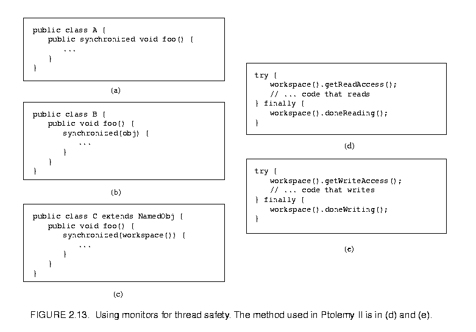
. It indicates that an exclusive lock should be obtained on a specific object before executing the body of code. If the keyword annotates a method, as in figure 2.13(a), then the method's object is locked (an instance of class A in the figure). The keyword can also be associated with an arbitrary body of code and can acquire a lock on an arbitrary object. In figure 2.13(b), the code body represented by ellipses (...) can be executed only after a lock has been acquired on object obj.Modifications to a topology that run the risk of corrupting the consistency of the topology involve more than one object. Java does not directly provide any mechanism for simultaneously acquiring a lock on multiple objects. Acquiring the locks sequentially is not good enough because it introduces deadlock potential. I.e., one thread could acquire the lock on the first object block trying to acquire a lock on the second, while a second thread acquires a lock on the second object and blocks trying to acquire a lock on the first. Both methods block permanently, and the application is deadlocked. Neither thread can proceed.
One possible solution is to ensure that locks are always acquired in the same order [21]. For example, we could use the containment hierarchy and always acquired locks top-down in the hierarchy. Suppose for example that a body of code involves two objects a and b, where a contains b (directly or indirectly). In this case, "involved" means that it either modifies members of the objects or depends on their values. Then this body of code would be surrounded by:
synchronized(a) {
synchronized (b) {
...
}
}
If all code that locks a and b respects this same order, then deadlock cannot occur. However, if the code involves two objects where one does not contain the other, then it is not obvious what ordering to use in acquiring the locks. Worse, a change might be initiated that reverses the containment hierarchy while another thread is in the process of acquiring locks on it. A lock must be acquired to read the containment structure before the containment structure can be used to acquire a lock! Some policy could certainly be defined, but the resulting code would be difficult to guarantee. Moreover, testing for deadlock conditions is notoriously difficult, so we implement a more conservative, and much simpler strategy.
One way to guarantee thread safety without introducing the risk of deadlock is to give every object an immutable association with another object, which we call its workspace. Immutable means that the association is set up when the object is constructed, and then cannot be modified. When a change involves multiple objects, those objects must be associated with the same workspace. We can then acquire a lock on the workspace before making any changes or reading any state, preventing other threads from making changes at the same time.
Ptolemy II uses monitors only on instances of the class Workspace. As shown in figure 2.3, every instance of NamedObj (or derived classes) is associated with a single instance of Workspace. Each body of code that alters or depends on the topology must acquire a lock on its workspace. Moreover, the workspace associated with an object is immutable. It is set in the constructor and never modified. This is enforced by a very simple mechanism: a reference to the workspace is stored in a private variable of the base class NamedObj, as shown in figure 2.3, and no methods are provided to modify it. Moreover, in instances of these kernel classes, a container and its containees must share the same workspace (derived classes may be more liberal in certain circumstances). This "managed ownership" [21] is our central strategy in thread safety.
As shown in figure 2.13(c), a conservative approach would be to acquire a monitor on the workspace for each body of code that reads or modified objects in the workspace. However, this approach is too conservative. Instead, Ptolemy II allows any number of readers to simultaneously access a workspace. Only one writer can access the workspace, however, and only if no readers are concurrently accessing the workspace.
The code for readers and writers is shown in figure 2.13(d) and (e). In (d), a reader first calls the getReadAccess() method of the Workspace class. That method does not return until it is safe to read data anywhere in the workspace. It is safe if there is no other thread concurrently holding (or requesting) a write lock on the workspace (the thread calling getReadAccess() may safely hold both a read and a write lock). When the user is finished reading the workspace data, it must call doneReading(). Failure to do so will result in no writer ever again gaining write access to the workspace. Because it is so important to call this method, it is enclosed in the finally clause of a try statement. That clause is executed even if an exception occurs in the body of the try statement.
The code for writers is shown in figure 2.13(e). The writer first calls the getWriteAccess() method of the Workspace class. That method does not return until it is safe to write into the workspace. It is safe if no other thread has read or write permission on the workspace. The calling thread, of course, may safely have both read and write permission at the same time. Once again, it is essential that doneWriting() be called after writing is complete.
This solution, while not as conservative as the single monitor of figure 2.13(c), is still conservative in that mutual exclusion is applied even on write actions that are independent of one another if they share the same workspace. This effectively serializes some modifications that might otherwise occur in parallel. However, there is no constraint in Ptolemy II on the number of workspaces used, so subclasses of these kernel classes could judiciously use additional workspaces to increase the parallelism. But they must do so carefully to avoid deadlock. Moreover, most of the methods in the kernel refuse to operate on multiple objects that are not in the same workspace, throwing an exception on any attempt to do so. Thus, derived classes that are more liberal will have to implement their own mechanisms supporting interaction across workspaces.
There is one significant subtlety regarding read and write permissions on the workspace. In a multithreaded application, normally, when a thread suspends (for example by calling wait()), if that thread holds read permission on the workspace, that permission is not relinquished during the time the thread is suspended. If another thread requires write permission to perform whatever action the first thread is waiting for, then deadlock will ensue. That thread cannot get write access until the first thread releases its read permission, and the first thread cannot continue until the second thread gets write access.
The way to avoid this situation is to use the wait() method of Workspace, passing as an argument the object on which you wish to wait (see Workspace methods in figure 2.3). That method first relinquishes all read permissions before calling wait on the target object. When wait() returns, notice that it is possible that the topology has changed, so callers should be sure to re-read any topology-dependent information. In general, this technique should be used whenever a thread suspends while it holds read permissions.
Acquiring read and write access permissions on the workspace is not free, and it is performed so often in a typical application that it can significantly degrade performance. In some situations, an application may simply wish to prohibit all modifications to the topology for some period of time. This can be done by calling setReadOnly() on the workspace (see Workspace methods in figure 2.3). Once the workspace is read only, requests for read permission are routinely (and very quickly) granted, and requests for write permission trigger an exception. Thus, making a workspace read only can significantly improve performance, at the expense of denying changes to the topology.
Often it is necessary to carefully constrain when changes can be made in a topology. For example, an application that uses the actor package to execute a program defined by a topology may require the topology to remain fixed during segments of the execution. During these segments, the workspace can be made read-only (see section 2.8.3), significantly improving performance.
A subpackage of the kernel, called the event package, provides support for carefully controlled mutations. The classes and interfaces in this package are shown in figure
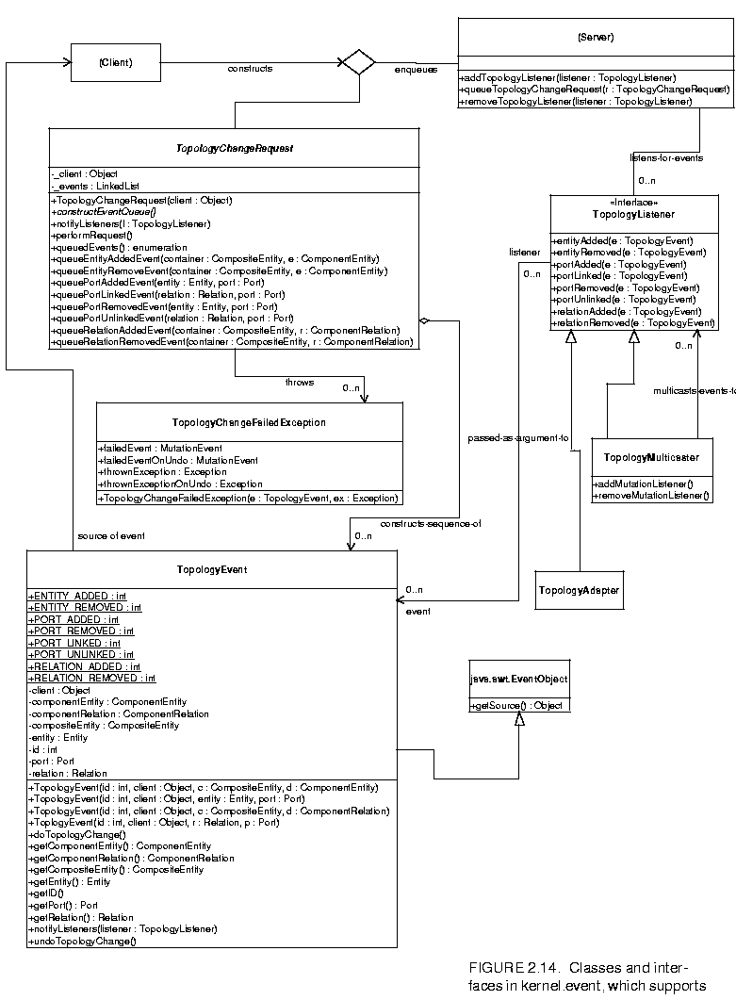
2.14. The style of this design is strongly inspired by the event model in the AWT.The typical usage pattern involves a source that wishes to have a mutation performed, such as an actor (see the Actors chapter), and an object that can safely perform the mutation, such as a director, (again, see the Actors chapter). The source creates an instance of the class TopologyChangeRequest and enqueues that request by calling the queueTopologyChangeRequest() of the director. When it is safe, the director executes the change by calling performRequest() on each enqueued TopologyChangeRequest. In addition, it informs any registered listeners of the mutations so that they can react accordingly.
We have taken some liberties with the notation in figure 2.14. There is no class called Source, so the name is shown in parentheses and the class with dashed outlines. This class represents typical uses of the event package, but are not included in the event package.
The Director class in the actor package allows topology mutations to occur only between iterations of an iterative execution of an application (see the Actors chapter). To support this, it has a queueTopologyChangeRequest() method that permits any other code to specify a mutation to be performed at the first opportunity.
Internally, each topology change request contains a sequence of topology events. Each event represents a primitive operation on the topology, such as adding an entity or creating a link between a port and a relation. Thus, a topology change request is an aggregation of topology events. Although is it not enforced (and probably cannot be), each such aggregation should be constructed so that the graph is transformed from one consistent, executable state to another.
A director processes a topology change request by calling its performRequest() method. This method activates each event by calling its doTopologyChange() method. If any of the events fails to perform (that is, it throws an exception) the entire request is rolled back - that is, undone - so that the graph remains in a consistent state. To do so, the undoEventAction() method of each event. If the undo completes successfully, doTopologyChange() throws a TopologyChangeFailedException containing the original exception that cause the event to fail. If the undo fails to complete, it throws a TopologyChangeFailedException containing both the original exception and the exception thrown by the unsuccessful undo operation.
Note that the attempt to roll back an unsuccessful topology change request can only go back as far as the start of the failed request. In general, directors and other classes that process topology changes should not attempt to roll back requests that have already been successfully completed, especially if there may be listeners that have already been notified about the change.
If the request completes successfully, the director then notifies all topology change listeners attached to it. It does this by calling the notifyListeners() method of the TopologyChangeRequest objects, which in turn calls the notifyListeners() method of the TopologyEvent objects. The notifyListeners() method of the TopologyEvent object calls the appropriate method in the listener interface.
Because of the possibility of failure of a change request, the director performs each request and notifies listeners immediately, rather than performing all requests and then notifying listeners of all of them. Any other classes that later support topology changes should be written to follow this pattern. The assumption is that changes that can be aggregated will be aggregated in a single instance of TopologyChangeRequest.
The TopologyChangeRequest class is abstract. In particular, one method, constructEventQueue() is abstract. Thus, to build a topology change request, a source will typically define an anonymous inner class, like this:
TopologyChangeRequest change = new TopologyChangeRequest() {
public void constructEventQueue () {
...
}
}
director.queueTopologyChangeRequest(change);
The body of the constructEventQueue() method should create entities, relations, ports, and so on. It should not directly insert these into the topology, however. Instead, it should call the (final) methods queueEntityAddedEvent(), queuePortAddedEvent(), and so on. These methods indicate what mutations are to be performed later. These methods internally create instances of TopologyEvent. The source is responsible for ensuring that the complete event, when performed, will leave the kernel structure in an executable state.
For example, the code in the constructEventQueue() method to create, add, and link a new entity might look like this:
Entity fred = new MyEntityClass("Fred");
ComponentEntity myContainer = getContainer();
queueEntityAddedEvent(myContainer, fred);
queuePortLinkedEvent(fred.getPort("input"), someRelation);
When performRequest() is called, the entity named fred will be created, added to myContainer, and linked to someRelation. When notifyListeners() is called, listeners will have their entityAdded() methods called with an event containing myContainer and fred, and then their portLinked() method called with an event containing fred's input port and someRelation.
Any director can safely perform topology changes. (In general, other objects may also perform topology changes.) It provides addTopologyListener() and removeTopologyListener() methods, so that interested objects can register to be notified when topology changes occur. In addition, it provides a method that topology change sources can use to queue requests. The director is responsible for obtaining write access to the workspace, calling the performRequest() and notifyListeners() methods of each queued request, and releasing write access. It also deals with failure of any topology change request, and decides if and how to recover from such an exception.
A topology listener is any object that implements the TopologyListener interface, and will typically include user interfaces, visualization components, schedulers, and so on. These objects can attach themselves to a director with the method addTopologyListener().
The notifyListeners() method accepts a TopologyListener object as argument, and dispatches each event in the queue to that listener. It does not check that the events represent mutations that have been performed. It is up to the director to ensure that mutations are performed before listeners are notified.
The TopologyEvent contains all information about an atomic topology change, such as adding an entity or linking to a port. Its id signifies what kind of event it is - for example, whether it represents adding an entity to a composite entity, linking a relation to a port, and so on. The fields compositeEntity, entity, port, relation, componentEntity, and componentRelation contain the objects involved in the event. For any given event, only two of these fields will be non-null, and the listener is assumed to be written correctly and to use the right ones. The event class contains methods for setting and getting these public fields. In addition, it contains methods to process the topology change represented by the event and to undo it.
The TopologyListener follows the AWT listener conventions, and contains a series of methods, one of which is called for each event type. Each method accepts a single TopologyEvent as argument, which contains the information about what the event means. There are two concrete classes that implement TopologyListener in this package: TopologyMulticaster, which can have other listeners attached to it and to which it forwards each method call; and TopologyAdaptor, which is an empty implementation of TopologyListener that makes it more convenient to create anonymous event listener classes.
Ptolemy II includes a set of exception classes that provide a uniform mechanism for reporting errors that takes advantage of the identification of named objects by full name. These exception are summarized in the class diagram in figure
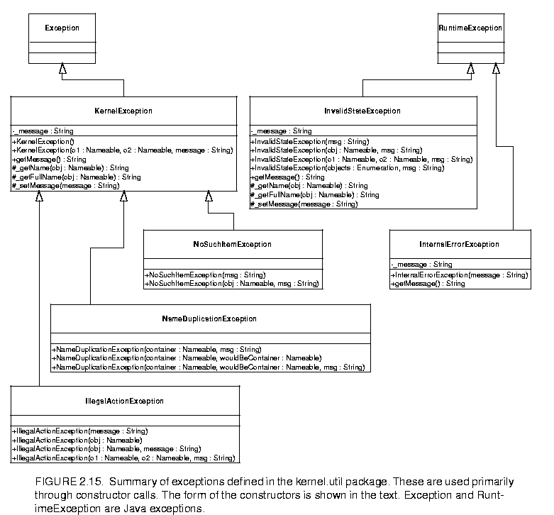
2.15.Not used directly. Provides common functionality for the kernel exceptions. In particular, it provides methods that take zero, one, or two Nameable objects plus an optional detail message (a String). The arguments provided are arranged in a default organization that is overridden in derived classes.
These exceptions generally indicate that an operation failed to complete. These can result in a topology that is not what the caller expects, since the caller's modifications to the topology did not succeed. However, they should never result in an inconsistent or contradictory topology.
Thrown on an attempt to perform an action that is disallowed. For example, the action would result in an inconsistent or contradictory data structure if it were allowed to complete. E.g., attempt to set the container of an object to be another object that cannot contain it because it is of the wrong class.
Thrown on an attempt to add a named object to a collection that requires unique names, and finding that there already is an object by that name in the collection.
Thrown on access to an item that doesn't exist. E.g., attempt to remove a port by name and no such port exists.
The following exceptions should never trigger. If they trigger, it indicates a serious inconsistency in the topology and/or a bug in the code. At the very least, the topology being operated on should be abandoned and reconstructed from scratch. They are runtime exceptions, so they do not need to be explicitly declared to be thrown.
Some object or set of objects has a state that in theory is not permitted. E.g., a NamedObj has a null name. Or a topology has inconsistent or contradictory information in it, e.g. an entity contains a port that has a different entity as its container. Our design should make it impossible for this exception to ever occur, so occurrence is a bug. This exception is derived from the Java RuntimeException.
An unexpected error other than an inconsistent state has been encountered. Our design should make it impossible for this exception to ever occur, so occurrence is a bug. This exception is derived from the Java RuntimeException.
Unless level-crossing links are allowed, which is discouraged.
2In that figure, every object has been given a unique name. This is not necessary since names only need to be unique within a container. In this case, we could refer to P5 by its full name .E0.E4.P5, assuming the workspace has no name (the leading period indicates this). However, using unique names makes our explanations more readable.
ptII at eecs berkeley edu Copyright © 1998, The Regents of the University of California. All rights reserved.